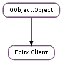

| static | new() |
| close_ic() | |
| enable_ic() | |
| focus_in() | |
| focus_out() | |
| is_valid() | |
| process_key(cb, user_data, keyval, keycode, state, type, t) | |
| process_key_async(keyval, keycode, state, type, t, timeout_msec, cancellable, callback, *user_data) | |
| process_key_finish(res) | |
| process_key_sync(keyval, keycode, state, type, t) | |
| reset() | |
| set_capacity(flags) | |
| set_cursor_rect(x, y, w, h) | |
| set_cusor_rect(x, y, w, h) | |
| set_surrounding_text(text, cursor, anchor) |
None
| Name | Parameters | Return | Description |
|---|---|---|---|
| close-im | Emit when input method is closed | ||
| commit-string | str | Emit when input method commit one string | |
| connected | Emit when connected to fcitx and created ic | ||
| delete-surrounding-text | int, int | Emit when input method need to delete surrounding text | |
| disconnected | Emit when disconnected from fcitx | ||
| enable-im | Emit when input method is enabled | ||
| forward-key | int, int, int | Emit when input method ask for forward a key | |
| update-client-side-ui | str, str, str, str, str, int | Emit when input method need to update client side ui | |
| update-formatted-preedit | GLib.PtrArray, int | Emit when input method need to delete surrounding text |
| Name | Type | Access |
|---|---|---|
| parent_instance | GObject.Object | r |
Bases: GObject.Object
A Fcitx.Client allow to create a input context via DBus
| Returns: | A newly allocated Fcitx.Client |
|---|---|
| Return type: | Fcitx.Client |
New a Fcitx.Client
tell fcitx inactivate current ic
tell fcitx activate current ic
tell fcitx current client has focus
tell fcitx current client has lost focus
| Returns: | Fcitx.Client is valid or not |
|---|---|
| Return type: | bool |
Check Fcitx.Client is valid to communicate with Fcitx
| Parameters: |
|---|
| Parameters: |
|
|---|
use this function with Fcitx.Client.process_key_finish
| Parameters: | res (Gio.AsyncResult) – result |
|---|---|
| Returns: | process key result |
| Return type: | int |
use this function with Fcitx.Client.process_key_async
| Parameters: | |
|---|---|
| Returns: | the key is processed or not |
| Return type: |
send a key event to fcitx synchronizely
tell fcitx current client is reset from client side
| Parameters: |
|---|
tell fcitx current client’s cursor geometry info
| Parameters: |
|---|
self A Fcitx.Client x x of cursor y y of cursor w width of cursor h height of cursor